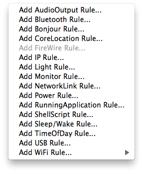
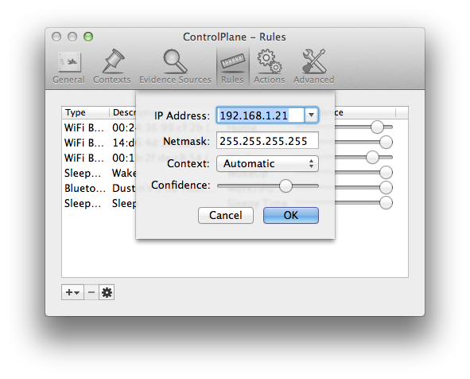

Configuring Rules

Rules are how ControlPlane determines your context. Rules can be created for any evidence source that you have enabled.
Once an evidence source has been enabled ControlPlane will start collecting data for that data source and if appropriate, allow you to create rules.

To add a rule simply choose what type of rule you wish to create and then configuration the available parameters.

The above example would create a new rule looking for 192.168.1.21 as an assigned IP address and apply the given confidence towards the 'Automatic' context if an interface is assigned that IP. Remember that a context can consist of many rules and rules can even overlap with other contexts. For the best results try to create rules that are highly indicative of where you are or what you are doing. For example, if you are assigned an IP of 192.168.1.x at work and at home, it probably isn't a good rule to use. Try to find some other evidence source that more definitively places your laptop at a given location.
Again, ControlPlane frequently evaluates all its rules, and finds the subset of rules that match. It combines all these rules to get a confidence for each context, and decides on the highest confidence context. If the confidence for that context is greater than a threshold (configurable in the Preferences window), and the context is not the current one, ControlPlane changes to that context, and triggers any relevant actions.
See also
About Evidence Sources
Configuring Actions
The maths behind ControlPlane